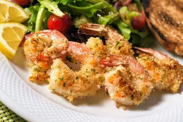

Garlic-Parmesan Shrimp

shrimp is a delicious dish
Ingredients
- 1 pound large shrimp, peeled and deveined
- 1 tablespoon olive oil
- 1 tablespoon butter
- 2 cloves garlic, minced
- 1 tablespoon lemon juice
- 1 tablespoon chopped fresh parsley
- 1/4 teaspoon salt
- 1/4 teaspoon ground black pepper
- 1/4 cup grated Parmesan cheese